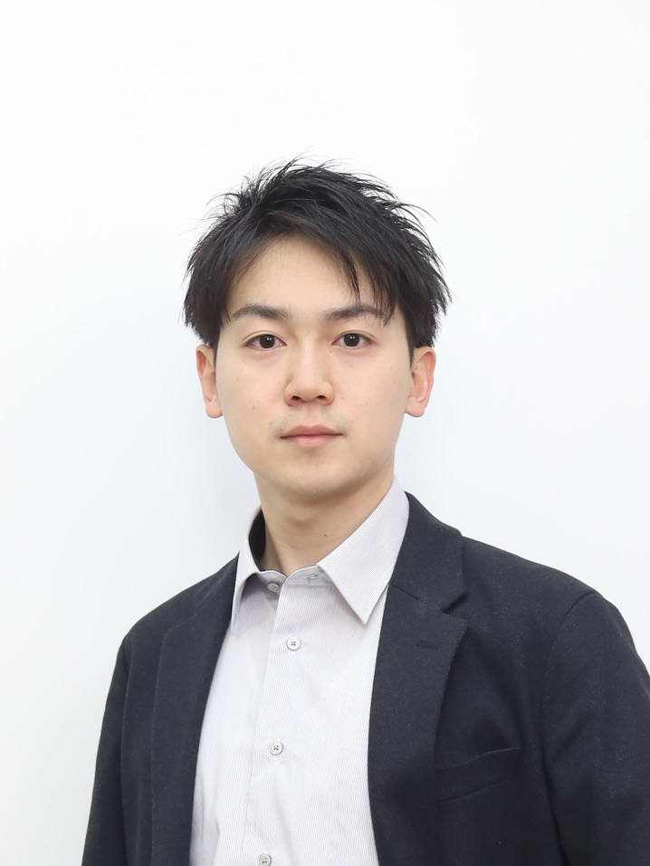

TAKUTO KOYAMA
PORTFOLIO
Chemo/Bioinformatics × Simulation × AI Drug Discovery
ABOUT

I'm a PhD student in Human Health Science at Kyoto University, specializing in chemo/bioinformatics for drug discovery, supervised by Prof. Yasushi Okuno.
My research focuses on developing and applying advanced deep learning models, including language models and graph neural networks, to accurately predict drug-target interactions.
My goal is to leverage these computational skills to accelerate the identification of novel therapeutic candidates.
BIOGRAPHY
-
Apr 2024–present
Doctoral Program, Human Health Sciences, Graduate School of Medicine, Kyoto University
Visiting Student, University of Bonn (Feb 2025–present) -
Apr 2024–present
JSPS Research Fellowship for Young Scientists (DC1)
-
Mar 2024
M.S., Human Health Sciences, Graduate School of Medicine, Kyoto University
-
Mar 2022
B.S., Department of Pharmaceutical Sciences, University of Tokyo
-
Apr 2020
Entered Faculty of Pharmacy, University of Tokyo
-
Apr 2018
Admitted to University of Tokyo (Science Category I)
RECENT WORKS
ARTICLES
First-authored
Chemical Genomics Language Model toward Reliable and Explainable Compound-Protein Interaction Exploration
Empowering Federated Learning for Robust Compound-Protein Interaction Prediction across Heterogeneous Cross-Pharma Domains
Improving ADME Prediction with Multitask Graph Neural Networks and Assessing Explainability in Lead Optimization
Improving Compound–Protein Interaction Prediction by Self-Training with Augmenting Negative Samples
Co-authored
HELM-BERT: Topology-aware representations for chemically modified peptides
kMoL: an open-source machine and federated learning library for drug discovery
Synergistic involvement of the NZF domains of the LUBAC accessory subunits HOIL-1L and SHARPIN in the regulation of LUBAC function
Feature extraction of particle morphologies of pharmaceutical excipients from scanning electron microscope images using convolutional neural networks
VGAE-MCTS: a New Molecular Generative Model combining Variational Graph Auto-Encoder and Monte Carlo Tree Search
CONFERENCE PAPER
PRESENTATIONS
Takuto Koyama, Hiroaki Iwata, Ryosuke Kojima, Takao Otsuka, Aki Hasegawa, Teruki Honma, Shigeyuki Matsumoto, and Yasushi Okuno. "Empowering Federated Learning for Robust Compound-Protein Interaction Prediction across Heterogeneous Cross-Pharma Domains", The 25th Annual Conference on Computational Biology and Informatics (CBI 2025), Tokyo, October 2025. [POSTER]
Seungeon Lee, Takuto Koyama, Itsuki Maeda, Shigeyuki Matsumoto, and Yasushi Okuno. "HELM-BERT: A Transformer for Medium-sized Peptide Property Prediction", The 25th Annual Conference on Computational Biology and Informatics (CBI 2025), Tokyo, October 2025. [ORAL]
Takuto Koyama, Hayato Tsumura, Ryunosuke Okita, Kimihiro Yamazaki, Keiko Imamura, Takashi Kato, Aki Hasegawa, Hiroaki Iwata, Ryosuke Kojima, Haruhisa Inoue, Shigeyuki Matsumoto, and Yasushi Okuno. Chemical Genomics Language Model toward Reliable and Explainable Compound-Protein Interaction Exploration, The 7th Annual Meeting of Japanese Association for Medical Artificial Intelligence, Kyoto, June, 2025. [ORAL]
Takuto Koyama, Hayato Tsumura, Ryunosuke Okita, Kimihiro Yamazaki, Takashi Kato, Aki Hasegawa, Hiroaki Iwata, Ryosuke Kojima, Shigeyuki Matsumoto, and Yasushi Okuno.
“Large-scale Prediction of Compound-Protein Interactions Using a Chemical-Genomics Language Model”,
47th Chemoinformatics Symposium, Kanazawa, December 2024. [ORAL]
Takuto Koyama, Hayato Tsumura, Ryunosuke Okita, Ryosuke Kojima, Shigeyuki Matsumoto, Yasushi Okuno.
ChemGLaM: Chemical Genomics Language Models for Compound-Protein Interaction Prediction,
ISMB 2024 MLCSB, Montreal, Canada, July 2024. [POSTER]
Takuto Koyama, Hayato Tsumura, Atsuyuki Matsumoto, Ryunosuke Okita, Ryosuke Kojima, Yasushi Okuno.
“ChemGLaM: Compound-Protein Interaction Prediction Using Large Language Models”,
24th Annual Meeting of the Protein Society, Sapporo, June 2024. [POSTER] Awarded Poster Prize
Takuto Koyama, Hiroaki Iwata, Atsuyuki Matsumoto, Ryosuke Kojima, Takao Otsuka, Aki Hasegawa, and Yasushi Okuno.
“Insight into Federated Learning for Compound-Protein Interaction Prediction”,
CBI Society 2023 Annual Meeting, Tokyo, October 2023. [ORAL]
Akira Ito, Takuto Koyama, Hiroaki Iwata, Atsuyuki Matsumoto, and Yasushi Okuno.
“Exploring Chemical Structural Insights of ADME Properties via Interpretable Deep Learning”,
CBI Society 2023 Annual Meeting, Tokyo, October 2023. [POSTER]
Hiroaki Iwata, Daichi Nakai, Takuto Koyama, Atsuyuki Matsumoto, Ryosuke Kojima, and Yasushi Okuno.
“A New Molecular Generation Method Combining Deep Learning and Reinforcement Learning”,
CBI Society 2023 Annual Meeting, Tokyo, October 2023. [POSTER]
Takuto Koyama, Shigeyuki Matsumoto, Hiroaki Iwata, Ryosuke Kojima, Yasushi Okuno.
Iterative Data Augmentation of Near-Boundary Negative Samples Improves the Model Generalizability in Compound-Protein Interaction Prediction,
ISMB/ECCB 2023 MLCSB, Lyon, France, July 2023. [POSTER]
Hiroaki Iwata, Yoshihiro Hayashi, Takuto Koyama, Aki Hasegawa, Satoshi Terayama, and Yasushi Okuno.
“Clustering of Pharmaceutical Excipients Using Pretrained Convolutional Neural Networks”,
38th Annual Meeting of the Japanese Pharmaceutical Association, Aichi, May 2023. [POSTER]
Takuto Koyama, Atsuyuki Matsumoto, Hiroaki Iwata, Ryosuke Kojima, and Yasushi Okuno.
“Improvement of Compound-Protein Interaction Prediction with Semi-supervised Learning”,
CBI Society 2022 Annual Meeting, Tokyo, October 2022. [POSTER]
WORK EXPERIENCES
- Part-time Engineer, Preferred Networks, Inc.
- August 1, 2025 – Present
- Invited Researcher, Artificial Intelligence Laboratory, Fujitsu Laboratories Ltd.
- January 20, 2025 – April 21, 2025
AWARDS
Oral Presentation Award at the 7th Annual Meeting of Japanese Association for Medical Artificial Intelligence
Poster Award Winner at the 24th Annual Meeting of the Protein Society
WRITINGS
Shigeyuki Matsumoto, Takuto Koyama, "Progress and Prospects of AI for Small Molecule Drug Discovery toward Realization of Drug Discovery DX" in Drug Discovery DX Realized by AI x Big Data (Progress in Medicine Vol. 296 No. 1), Ishiyaku Publishers
Authored the AI Drug Discovery Guide for the 'Demon Slayer: Kimetsu no Yaiba' Collaboration
Takuto Koyama, Yasushi Okuno,
“Chapter 6: AI, Big Data, and Drug Discovery” in Utilization of Information and AI in Chemistry (CSJ Current Review: 50), Kagaku Dojin
Takuto Koyama, Yasushi Okuno,
The AI Trends in Chemical Space for Drug Discovery, Drug Development Supported by Informatics, Springer
REVIEW
Journal of Cheminformatics
Journal of Pharmaceutical Innovation
Scientific Reports
Computational and Structural Biotechnology Journal